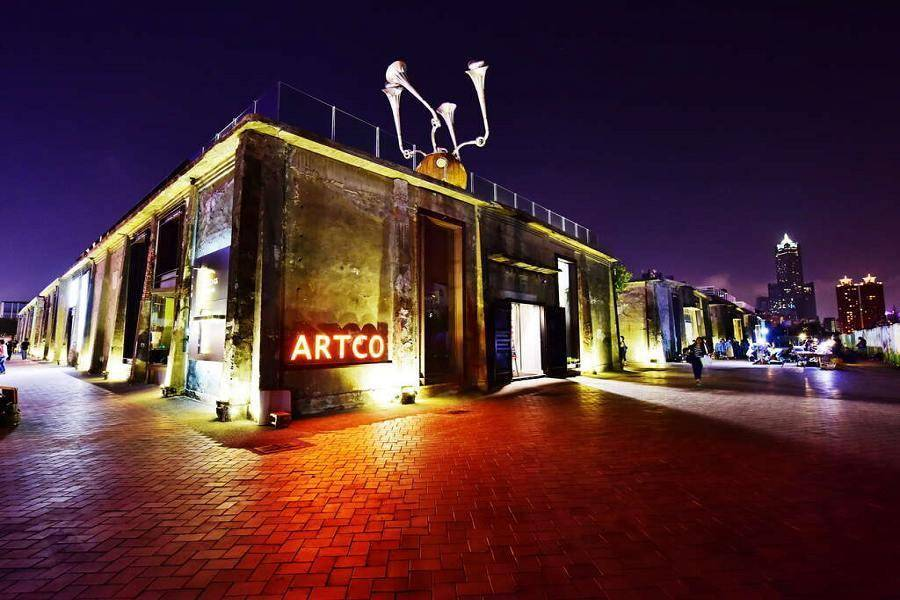
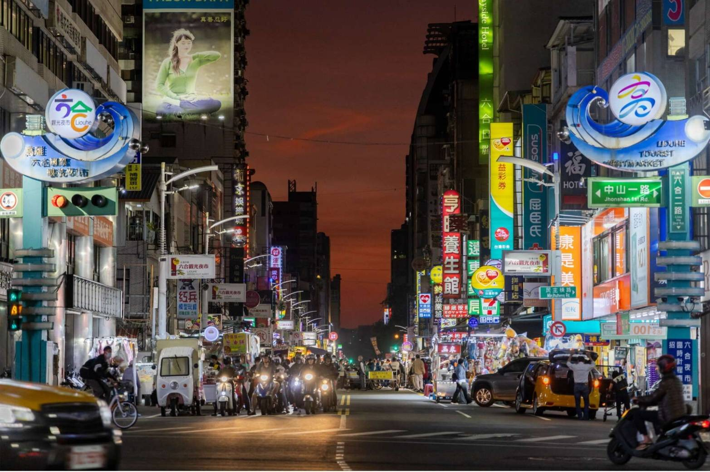

09:00 集合 | 鹽埕埔站出發
鹽埕埔站
1. 是鹽埕老城區的門戶
2. 交通便利易集合
3. 富有歷史氛圍
4. 鄰近傳統市場
5. 可作為文化導覽起點

09:30 大溝頂市場周邊
大溝頂市場周邊
1. 在地人常逛的熱鬧市場
2. 可感受庶民生活
3. 傳統攤販多樣性
4. 街區紋理保留完整
5. 適合拍照與街頭散策

10:30 君店（新樂街）
君店（新樂街）
1. 文青風格設計感十足
2. 咖啡廳與選書店結合
3. 有本地創作商品
4. 適合休息放鬆
5. 可深入了解新樂街人文風貌

12:30 午餐時間
小吃地圖 / 鴨肉珍
1. 在地老字號美食
2. 選擇多樣，滿足不同口味
3. 高CP值
4. 鹽埕區美食密集
5. 可自由探索個人喜好餐
說明：鹽埕是高雄老市區之一，擁有豐富的庶民飲食文化。

13:30 鹽一區特約區 → 哈瑪星鐵道文化園區
文學導覽：《港邊人生・鹽埕再出發》
書目簡介：結合鹽埕街區記憶與人物故事，收錄當地居民的人生歷程，展現港邊城市如何在時代變遷中留下痕跡。
說明：實地踏查與書中人物及場景連結，感受特約區與港邊文化的演變。
15:00 駁二藝術區 → 高雄車站（輕軌導覽）
駁二藝術區
說明：駁二為高雄文創重地，輕軌路線橫貫過去的工業區與現代景觀。沿途可觀察城市再生與文化融合。
15:30 高雄車站後站 / 驛轉場遺跡
文學導覽：《一九九九》
書目簡介：小說以高雄為背景，描繪城市邊界、記憶與疏離感，呈現人與空間的流動與離散。
說明：探訪都市邊緣地帶的荒廢與轉變，搭配小說中的地景場景理解書中主題。

17:30 自由活動／晚餐分享
地點：可前往下午公園或回到鹽埕聚餐
說明：自由活動，可作為沉澱與討論導覽內容的時間，也可簡單散步放鬆。
18:30 夜市散步與結束
大溝頂夜市 / 六合夜市
說明：兩者皆為高雄具代表性的夜市文化場域，能感受鹽埕夜間的庶民活力與生活節奏。
